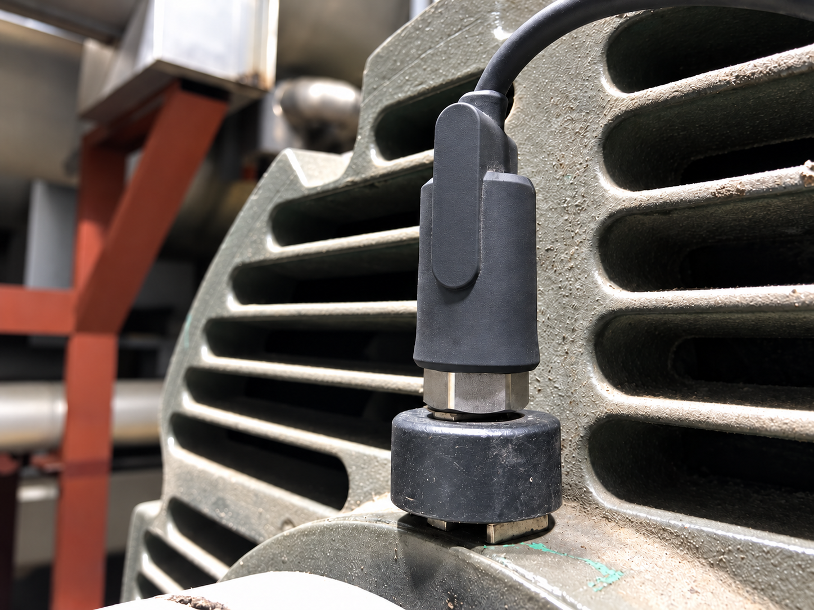
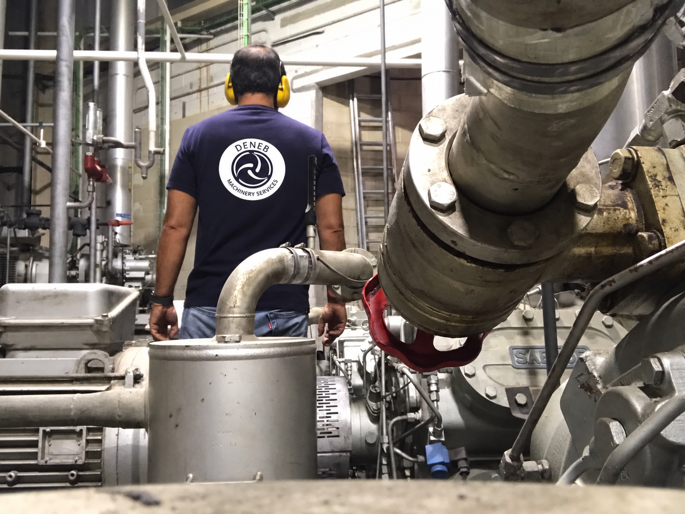
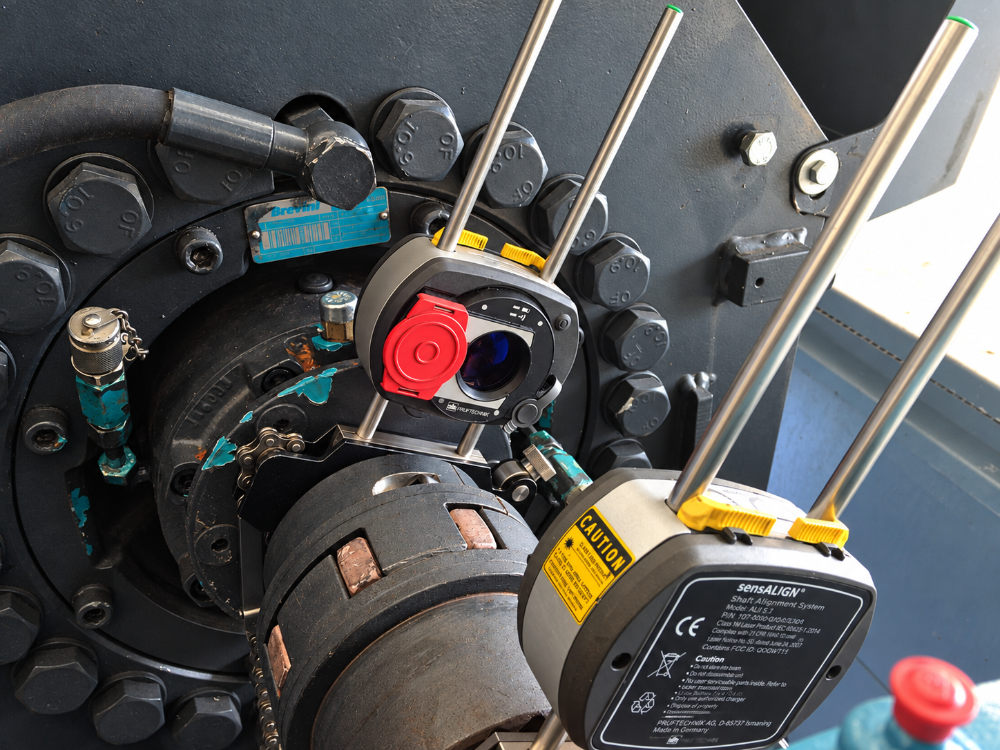
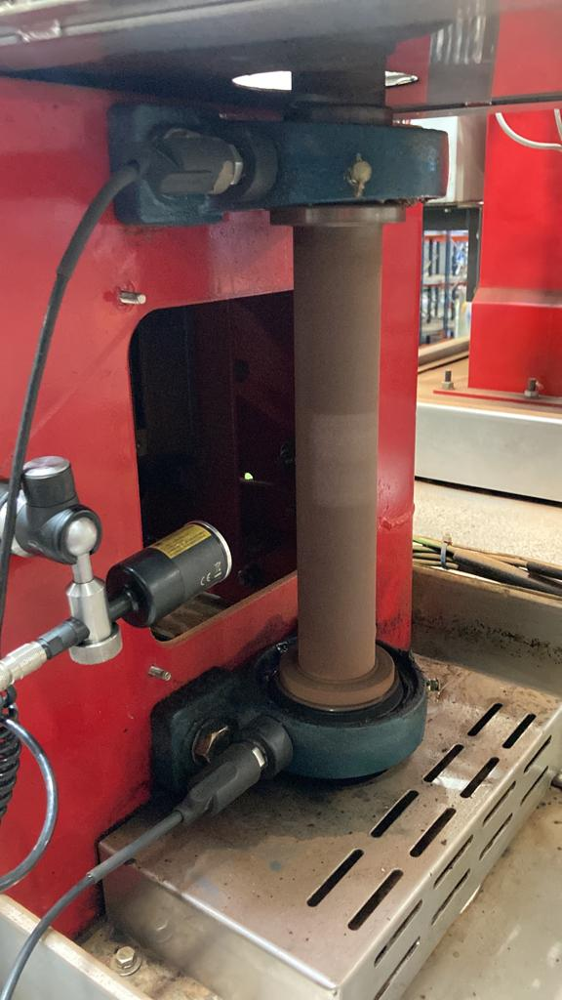
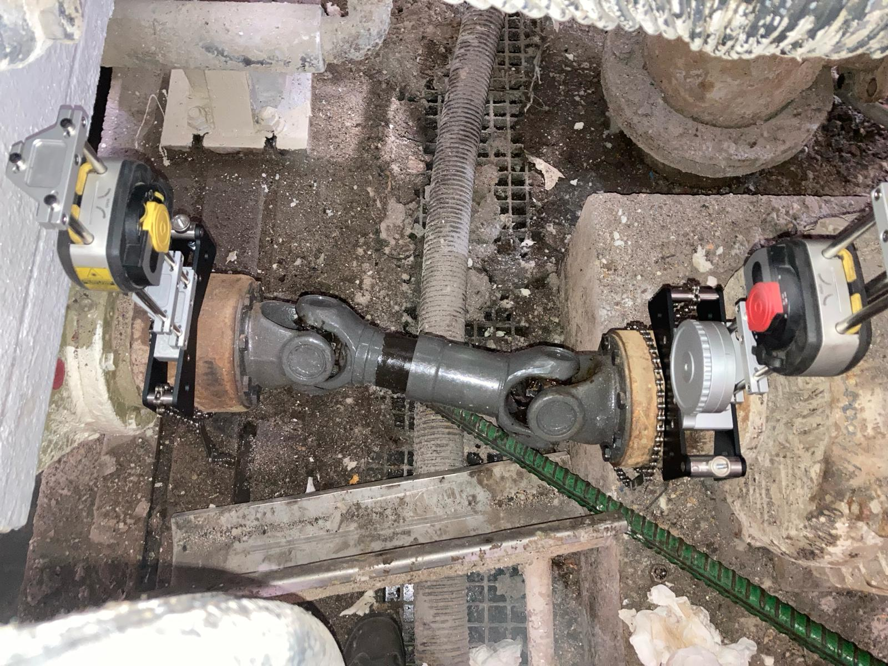
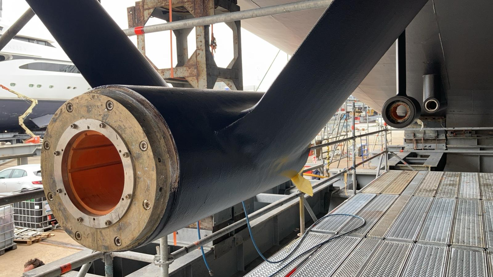
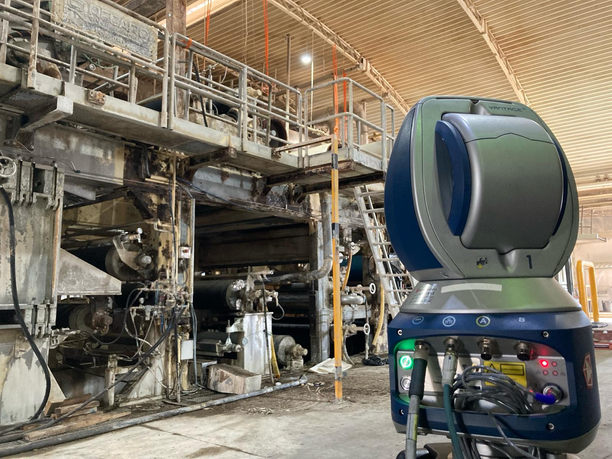
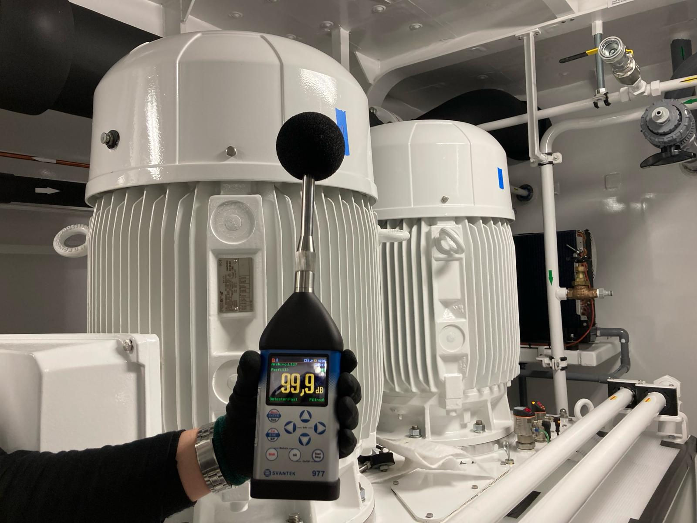

Análisis de vibraciones
Identificación de fallos mecánicos mediante mediciones y seguimiento de tendencias.
Ingeniería de mantenimiento · Valencia
Detectamos el origen de los problemas mecánicos y definimos la intervención necesaria con datos fiables.

Desde 2013Experiencia de campo
Naval · Papel · IndustriaEntornos productivos exigentes
Servicio in situMedición, diagnóstico y corrección
Capacidad técnica
Medición, corrección y seguimiento de maquinaria, en planta o en taller.

Identificación de fallos mecánicos mediante mediciones y seguimiento de tendencias.

Corrección de la alineación en equipos horizontales, verticales y acoplamientos especiales.

Corrección del desequilibrio en uno o dos planos, en planta o taller.

Ajuste de transmisiones cardan sin desmontar el eje ni realizar maniobras complejas.

Comprobación de centros y ejes de rotación en conjuntos mecánicos.

Control de planitud, nivelación y posicionamiento mediante tecnología láser tracker.

Evaluación del ruido ambiental de las instalaciones mediante sonómetro.
Priorización de activos, tecnologías de monitorización y frecuencias de inspección.
Configuración de inspecciones con aplicaciones móviles y formación del equipo.
Programas de lubricación guiados por mediciones de ultrasonido o vibración.
Documentación del mantenimiento predictivo para apoyar la revisión de tarifas.
Deneb Machinery Services
Desde 2013 trabajamos con equipos de mantenimiento de los sectores naval, papelero y de gran industria. Convertimos mediciones complejas en acciones concretas, verificables y ajustadas a cada máquina.
Contacto
Indica la máquina, el síntoma y la urgencia. Te responderemos con el siguiente paso.
lorenzosoler@denebms.com Gran Vía 111 · 46008 Valencia